Lecture 4
Adolfo De Unánue
adolfo.deunanue@itam.mx
Docker
Obtener la imagen
docker pull nanounanue/docker-hadoop
Ejecutar un contenedor
docker run -ti --rm \
-v /ruta/a/tus/datos/:/home/itam/data \
-p 2122:2122 -p 2181:2181 -p 39534:39534 -p 9000:9000 \
-p 50070:50070 -p 50010:50010 -p 50020:50020 -p 50075:50075 \
-p 50090:50090 -p 8030:8030 -p 8031:8031 -p 8032:8032 \
-p 8033:8033 -p 8088:8088 -p 8040:8040 -p 8042:8042 \
-p 13562:13562 -p 47784:47784 -p 10020:10020 -p 19888:19888 \
-p 8000:8000 \
nanounanue/docker-hadoop /bin/zsh
Contenedor con Hadoop
docker run -ti --name hadoop-pseudo \
-v /ruta/a/tus/datos/:/home/itam/data \
-p 2122:2122 -p 2181:2181 -p 39534:39534 -p 9000:9000 \
-p 50070:50070 -p 50010:50010 -p 50020:50020 -p 50075:50075 \
-p 50090:50090 -p 8030:8030 -p 8031:8031 -p 8032:8032 \
-p 8033:8033 -p 8088:8088 -p 8040:8040 -p 8042:8042 \
-p 13562:13562 -p 47784:47784 -p 10020:10020 -p 19888:19888 \
-p 8000:8000 -p 9999:9999 \
nanounanue/docker-hadoop
Reiniciar el contenedor
docker start -ai hadoop-pseudo
Conectarse a un contenedor funcionando
- Esto podría ser útil para ver, por ejemplo
logso arrancar varios clientes. - Averigua el número del contenedor
docker ps -a
docker exec -it /bin/zsh
o en nuestro caso:
docker exec -it hadoop_pseudo /bin/zsh
- Nota: Recuerda que con los primeros 4 dígitos del contenedor basta para identificarlo.
Navegador Web
Ejercicio
- Explicar los diferentes modos en los que puede ejecutarse Apache Hadoop.
- Modo Pseudodistribuido
- Crea el contendeor de Docker para Hadoop, vamos a explicar que significa pseudodistribuido.
Apache Hadoop
¿Por qué?
- Aunque la capacidad de los discos ha aumentado considerablemente, la velocidad de los mismos no lo ha hecho igual.
- Los discos actuales de
1 Tb, tardan en leerse completos a100 Mb/scerca de dos a tres horas. - Podemos paralelizar las fuentes en varios discos.
- Para leerla simultáneamente
- Con varios discos, la probabilidad de falla aumenta.
- Los discos actuales de
- Otro problema es la distribución ¿Cómo combinas varios
file systems?
¿Qué es?
- Sistema confiable (realiable) de almacenamiento compartido y de procesamiento de datos.
- Almacenamiento: Hadoop Distributed File System,
HDFS - Procesamiento: Varios frameworks basados en
YARN.
- Almacenamiento: Hadoop Distributed File System,
- Puede procesar cantidades masivas de datos y escalar conforme crezcan los datos.
- Flexibilidad para el procesamiento de datos.
- No importa la estructura o falta de ella
- Está construido en
Java.
¿Cómo?
MapReducees un sistema de procesamiento batch- Permite correr queries contra toda tu base de datos
- Pero el resultado puede tardar minutos, horas, etc…
- No permite tener a un humano sentado ahí para retroalimentar.
¿Cómo?
- Ahora, gracias a
YARN(ver más adelante) tenemos diferentes tipos de procesamiento:- SQL Interactivo:
Impala,Hive,Spark SQL. - Iterativos:
Spark. - Procesamiento de flujos:
Storm,Spark Streaming. - Búsquedas:
Solr. - Grafos
Spark GraphX.
- SQL Interactivo:
¿Por qué no otros sistemas?
- ¿Por qué no usar un
PostgreSQLcon muchos discos, muy pimpeado?- El problema viene del tiempo que toma mover la cabeza del disco a otro lugar del disco para leer o escribir datos (seek time).
- ¿Cuál es la latencia de la operación?
- El problema viene del tiempo que toma mover la cabeza del disco a otro lugar del disco para leer o escribir datos (seek time).
- ¿Por qué no Grid?
- Por ejemplo, cosas de
HPCque usanMPI.- Son intensivos en CPU.
- Pero si hay que mover cientos de gigabytes, la transferencia de datos se vuelve un problema.
- Basicamente, en que
Hadoopopera con data locality.
- Basicamente, en que
- Por ejemplo, cosas de
Componentes de Apache Hadoop
- MapReduce Modelo de procesamiento batch de datos distribuido y paralelo.
- HDFS Sistema de archivos (file system) distribuido.
- Pig Capa de abstracción encima de
MapReduce. Utiliza Pig Latin un lenguaje de flujo de datos- Como
dplyr
- Como
- Hive (Hadoop InteractiVE) Es un lenguaje parecido al
SQL:HQL, para ejecutar queries sobre elHDFS. - HBase Base de datos distribuida orientada a columnas.
- Depende de
Zookeeper.
- Depende de
- Impala Lenguaje Interactivo parecido al
SQL, pero mucho más rápido deHIVEdebido a su arquitectura MPP.
Componentes de Apache Hadoop
- Zookeeper Proyecto que proveé un servicio centralizado para facilitar la coordinación de componentes de Hadoop.
- Sqoop Herramienta para mover datos entre
RDBMyHDFS. - Flume Servicio para recolectar, agregar y mover grandes cantidades de datos entre máquinas individuales y el
HDFS. - Oozie Sistema de workflow, se usa para coordinar varios jobs de MapReduce.
- Mahout Biblioteca de Machine Learning.
- Ver la carpeta
docs.
- Ver la carpeta
- Ambari Simplifica el aprovisionamiento, gestión y monitoreo de un cluster de Hadoop.
- Avro Formato de serialización y de persistencia de datos.
- Entre otros…
HDFS : Hadoop File System
HDFS
- Sistema de almacenamiento distribuido.
- Namenode
->Master - Datanode
->Slaves
- Namenode
Schema on Read
- Es posible cargar datos sin procesar dentro de Hadoop, la estructura se dará en el tiempo de procesamiento.
- Es muy diferente a Schema on Write como el usado en los =RDBM=s
- Schema on Write impone un ciclo de análisis y modelado de datos, así como de su transformación, carga y prueba, antes de los datos puedan ser accesados.
- Esto quita mucha flexibilidad: Si se tomaron decisiones incorrectas o los requerimientos cambian, es necesario empezar de nuevo
:(.
Ventajas
- Archivos muy grandes
- write once, read many times.
- Hardware normal
Desventajas
- Acceso a los datos de baja latencia.
- Muchos archivos pequeños.
- Muchas escrituras, modificaciones
Tamaño del bloque
- Cada file system define un tamaño de bloque, el cual es la cantidad mínima de datos que puede escribir o leer.
- Típicamente son de
kb.
- Típicamente son de
- En
HDFS, el bloque es de128 Mbpor default.- Es el concepto fundamental, no el archivo.
Namenode
- Gestiona el filesystem
- Mantiene el árbol del filesystem.
- Mantiene los
metadatosde todos los archivos y carpetas del árbol. - Esta información se guarda en disco en dos archivos:
namespace imageedit log
- Indica a los datanodes realizar tareas de bajo nivel de
I/O. - Book Keeper
- División de archivos en bloques (¿Cómo?)
- En qué datanode (¿Quién?)
- Monitorea.
- Uso intensivo de
RAMy deI/O. - Si se cae el
HDFSno puede ser usado- Hasta la versión
1.xel single point of failure, en Hadoop 2 se incorporó la característica de HIgh Availability. - Su caída puede causar la pérdida total de los datos.
- Hasta la versión
Namenode
- Hadoop proveé de dos formas de aliviar esta situación:
- Respaldos: Se puede configurar al namenode para que escriba su estado a varios filesystems.
- Secondary Namenode
Namenode
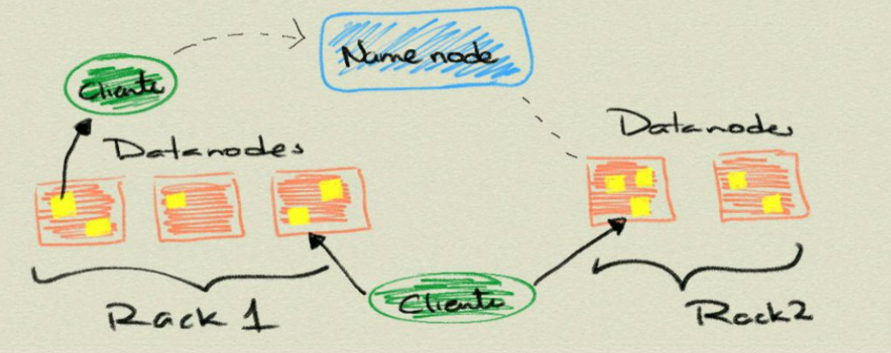
Datanode
- Lee y escribe los
HDFSblocks y los convierte en archivos del FS local. - Se comunica con otros datanodes para la replicación de los datos.
- Pueden realizar caching de bloques.
Datanode
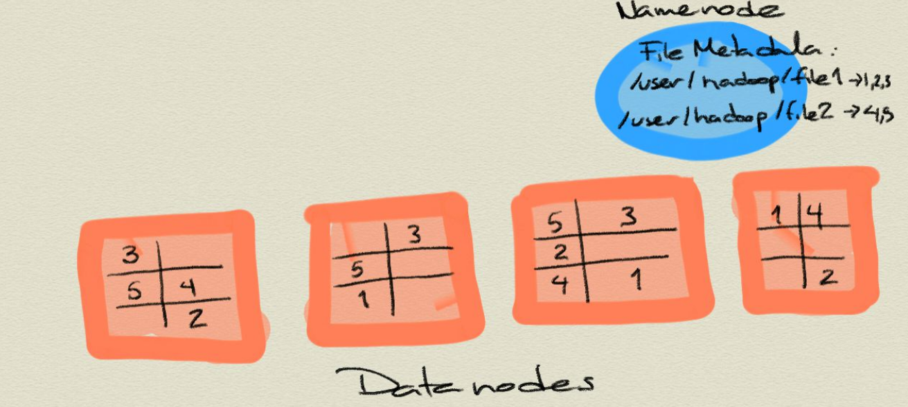
Secondary Name Node
- Como el namenode sólo hay uno por cluster.
- No es un namenode.
- Evita que el
edit logcrezca mucho. - No recibe ni guarda cambios en tiempo real del
HDFS.- Va atrás del namenode.
- Sólo toma snapshots de la metadata.
Línea de comandos
- Hay muchas maneras de conectarse y usar el
HDFS. La línea de comandos es una de ellas.- Y espero que ya sepan que es de las más útiles y eficientes.
- Ayuda:
hadoop fs -help
Línea de comandos
hadoop fs -cmd
hadoop fs -ls
hadoop fs -mkdir
hadoop fs -copyFromLocal
hadoop fs -copyToLocal
hadoop fs -put archivo archivo_hdfs
hadoop fs -get archivo_hdfs
hadoop fs -cat archivo_hdfs
hadoop fs -cat archivo_hdfs head
hadoop fs -tail archivo_hdfs
hadoop fs -rm archivo_hdfs
Arquitectura: Ingesta de datos
Decisiones Arquitectónicas
- El hecho de que el
HDFSpermita Schema on Read, no elimina la necesidad de tomar decisiones arquitectónicas en la ingesta de los datos, entre ellas:- ¿Cómo se guardarán los datos?
- Capa de almacenamiento
- Formatos de archivos
- Formatos de compresión
- ¿Diseño de esquema de datos?
- Directorios donde guardar los datos y donde ponerlos luego del procesamiento y analítica.
- También en
HBasey enHivese definen esquemas.
- ¿Cómo se gestionarán los metadatos?
- ¿Cómo se administrará la seguridad?
- Autenticación, cifrado, acceso controlado.
- ¿Cómo se guardarán los datos?
Capa de almacenamiento: HDFS vs HBase
HDFS- Almacena los datos como archivos
- Scans rápidos.
- Malo para acceso aleatorio en escritura y lectura.
HBase- Guarda los datos como archivo
s de HBase en el HDFS.
- Scans lentos.
- Rápido acceso aleatorio a lectura y escritura.
- En esta clase nos enfocaremos a
HDFS.
Formatos de archivos
- Tipos de archivos de Hadoop
- Basados en archivos:
SequenceFiles. - Formatos serializados:
Avro,Thrift. - Formatos columnares:
RCFile,ORCFile,Parquet.
- Basados en archivos:
- Debido a que la mayoría de formatos de archivos sólo se puede acceder desde
Java, nos enfocaremos en sólo dos:AvroyParquet
Formatos de archivos
Avro- Independiente del lenguaje.
- Almacena el esquema en el encabezado de cada archivo.
- Son comprensibles y divisibles.
- Soporta compresión con
snappy.
- Soporta compresión con
- Es recomendable usarlo en la ingesta de datos.
- Las fallas sólo afectan a una porción del archivo.
Formatos de archivos
Parquet- Diseñado para proveer procesamiento eficiente a través de varios compoentes de hadoop.
- Almacena los datos de manera columnar.
- Provee excelentes capacidades de compresión.
- Soporta estructuras de datos complejas y anidadas.
- Los metadatos están guardados al final del archivo.
- Puede escribirse y leerse con las APIs de Avro y con esquemas de Avro.
- No son tan buenos para recuperarse de errores.
Formatos de compresión
- Ayuda a reducir los requerimientos de almacenamiento
- Mejora el procesamiento de los datos
- Disminuye ,a cantidad de I/O en disco y red.
- Para aprovechar las capacidades de procesamiento en paralelo de Hadoop es preferible que el formato sea divisible.
Formatos de compresión
bzip2- Excelente factor de compresión
- Pero muuuuuy lento en compresión/decompresión
- Divisible
snappy- Proyecto de Google.
- No es divisible, pero muy eficiente en compresión/decompresión.
- Se debe de usar con un formato de archivo que provea la capacidad de contenedor (
Avro,SequenceFiles).
gzip- No es divisible
- Buen factor de comrpesión: 2.5x lo de
snappy. - Se debe de usar con un formato de archivo que provea la capacidad de contenedor (
Avro,SequenceFiles).
lzop- Parecido a
snappyen eficiencia de compresión/decompresión. - Divisible, pero requiere una etapa de indexado.
- Buena elección para guardar archivos de texto planos que no se pondrán dentro de un contenedor.
- Licenciamiento raro (No viene incluido con Hadoop).
- Parecido a
Esquema
- Nota: Basado en Hadoop Application Architectures.
- ¿Por qué?
- Estructura de archivos estándar facilita la colaboración entre equipos.
- Permite la reutilización de código para procesarla.
- Permite reforzar las políticas de acceso y evitar así corrupción de los datos.
- Permite identificar que datos han sido procesados completamente y cuales no
- Muy parecido a los
schemasde PostgreSQL.
Esquema Propuesto
/user/<username>- Datos para experimentar (i.e. no son parte del proceso de negocio).
JARs, archivos de configuración.- Sólo debe de tener permisos de R/W el usuario en cuestión.
/etl- Datos en sus varias etapas de transformación por el ETL.
- Subdirectorios reflejan el workflow de los datos.
- Los ETL son creados por grupos para aplicaciones.
- Además cada subdirectorio tendrá a su vez directorios para cada etapa del proceso:
inputpara el lugar donde llegan los archivosprocesandopara los pasos intermedios (puede haber varios)outputpara el resultado finalrechazadospara los registros o archivos que no pudieron ser procesados y que deben de verificarse manualmente.
- La estructura quedaría así:
/etl/<grupo>/<aplicación>/<proceso>/{input, procesando, output, rechazados}
- Sólo el usuario
etly los usuarios del grupoetlpueden R/W.
Esquema Propuesto
/tmp- Datos temporales generados por usuarios o partes de Hadoop.
- Se borra su interior regularmente.
- Todos tienen permisos de RW en este directorio.
/data- Datos procesados y usados por la organización
- Existen controles sobre quién puede o no usar los datos
- Los usuarios sólo tienen permisos de lectura.
- Los procesos automatizados (y auditados) tienen permisos de escritura.
/app- Todo lo requerido por la aplicación de Hadoop para funcionar (salvo datos)
- Archivos de Oozie (definiciones de workflows),
- Archivos de
hql,pig,JARs,UDFs, etc.
Otras consideraciones
- Particionado
- Ayuda a reducir la cantidad de I/O para procesar los datos.
- Es una especie de indexado básico.
<nombre del dataset>/<columna sobre la cual particionar>=<valor de la columna>/{archivos}
- Denormalizar
- Ahorras
Joins(que son lentos)
- Ahorras
Ejercicio I
- En este ejercicio prepararemos el esquema de nuestra aplicación de gran escala.
- Inicializa el contenedor
hadoop-pseudo. - Cambia al usuario
itam. - Revisa la estructura de directorios con el usuario
hdfs.- Esto lo puedes hacer con
sudo -u hdfs ...
- Esto lo puedes hacer con
- Crea el esquema de directorios propuesta.
- Esto lo puedes hacer con
sudo -u hdfs ... /user/<username>,/etl(para la aplicaciónufoygdelt, el grupo esds),/tmp,/appy/data.- Las últimas tres están vacías.
- Esto lo puedes hacer con
- Asigna los permisos adecuados.
- Dentro de tu carpeta (siendo el usuario
itam), crea la carpetadatasetsy adentroufosy la carpetagdelt.
Ejercicio I
- Dentro de tu carpeta (siendo el usuario
itam), crea la carpetaexperimentos. - Carga dos archivos de cada dataset a esta carpeta desde
/home/itam/data/usando la línea de comandos.- Observa que una de las carpetas es local…
- Verifiquemos que los datos estén bien:
hadoop fs -cat experimentos/UFO-Dic-2014.tsv | wc -l
hadoop fs -cat experimentos/UFO-Dic-2014.tsv | head
- Observa como los datos están en formato de texto, justo como la copia que está en tu disco duro.
Ejercicio II
- En este ejercicio usaremos
kite. Kitees una herramienta que nos permite cargar y administrar los metadatos de los archivos a Hadoop.- Pueden obtener ayuda con
kite-dataset help comando.
- Pueden obtener ayuda con
- Tanto
Avro, comoHive Metastorepueden servir para gestionar los metadatos ykitepuede trabajar con ambos. - En este ejercicio, nos enfocaremos en el dataset de
ufos. - Y a partir de aquí, todos los ejercicios son con el usuario
itam.
Ejercicio II
HDFSyAvropara guardar los metadatos.- Infiere el esquema a partir de uno de los archivos:
kite-dataset csv-schema data/UFO-Nov-2014.tsv --class UFO -o ufos.avsc --delimiter "\t"
- Esto va a marcar un error, arréglalo con
sed.- Cuando hay
/de por medio puedes cambiar el separador desedpor cualquier caracter, ejemplo:
- Cuando hay
sed -e -i 's@cambiar_algo@por_esto@g' archivo
- Abre el archivo
ufos.avsc, es el esquema en formatoavro. - Ahora crearemos el
dataseten elhdfs.
kite-dataset create dataset:hdfs:/user/itam/datasets/ufos --schema ufos.avsc
- Observa los cambios ocurridos en la carpeta
ufosdelhdfs.- Recuerda que puedes ver el contenido con el comando
hadoop fs -cat
- Recuerda que puedes ver el contenido con el comando
- Para verificar que se realizó bien puedes ejecutar:
kite-dataset schema dataset:hdfs:/user/itam/datasets/ufos
Ejercicio II
- Por último, importemos los datos
kite-dataset csv-import data/UFO-Nov-2014.tsv dataset:hdfs:/user/itam/datasets/ufos --delimiter "\t"
kite-dataset csv-import data/UFO-Dic-2014.tsv dataset:hdfs:/user/itam/datasets/ufos --delimiter "\t"
- Veamos que si se copiaron:
kite-dataset show dataset:hdfs:/user/itam/datasets/ufos
- Ahora observa como se ve un conjunto de datos en fornato
avro, usando las herramientas de línea de comandos.- No lo abras con
hadoop fs -cat ...o la consola se dañará…
- No lo abras con
- NOTA: Si algo salió mal, puedes borrar el dataset con
kite-dataset delete dataset:hdfs:/user/itam/datasets/ufos
Ejercicio II
- Ahora guardaremos los datos en
hive metastore.- No te preocupes más adelante explicaré que es esto, por el momento piensa en una base de datos para los metadatos.
- Los pasos son casi los mismos que el ejercicio anterior, sólo cambia el destino: ya no es el
HDFS, ahora eshive metastore. - Crea el
dataset
kite-dataset create ufos --schema ufos.avsc
- Para verificar que se realizó bien puedes ejecutar:
kite-dataset schema ufos
- Y para asegurarnos que no son los mismos datos que antes (los guardados en el
hdfs), ejecuta
kite-dataset show ufos
Ejercicio II
- Importemos los datos
kite-dataset csv-import data/UFO-Nov-2014.tsv ufos --delimiter "\t"
kite-dataset csv-import data/UFO-Dic-2014.tsv ufos --delimiter "\t"
- Veamos que si se copiaron:
kite-dataset show ufos
- NOTA: Si algo salió mal, puedes borrar el dataset con
kite-dataset delete ufos
Ejercicio III
- En este momento, tienes 3 veces los datos en tres formatos diferentes: A
- Archivo de texto
- Archivo
avro - Guardado como tabla en
hivey sus metadatos en elhive metastore.
- Más adelante veremos en detalle las abstracciones y procesadores que tiene
Hadooppara manipular y analizar los datos, pero por el momento los usaremos para ver los datos, sin dar mucha explicación.- En lo que sigue, observa el código, todo tendrá más sentido cuando expliquemos apropiadamente estas herramientas.
- En este ejercicio, veremos
spark,pig,hiveeimpala.
Ejercicio III
- Empecemos con el archivo de texto (localizados en
hdfs://localhost/user/itam/experimentos/) - Usaremos la consola de
pythondespark
pyspark
- La respuesta, luego de varias líneas de texto debe de ser:
Welcome to
____ __
/ __/__ ___ _____/ /__
_\ \/ _ \/ _ `/ __/ '_/
/__ / .__/\_,_/_/ /_/\_\ version 1.3.0
/_/
Using Python version 2.7.8 (default, Oct 20 2014 15:05:19)
SparkContext available as sc, HiveContext available as sqlCtx.
>>>
- Observa que hay dos contextos al final:
SparkContextyHiveContext, estos contextos permiten interactuar con el cluster de Hadoop.
Ejercicio III
- Carguemos como RDD el archivo (en este caso, estamos cargando líneas de texto, no como archivo
tsv)
ufos_nov = sc.textFile("hdfs://localhost/user/itam/experimentos/UFO-Nov-2014.tsv")
- Contemos las líneas que hemos cargado
ufos_nov.count()
- Veamos los primeros cinco renglones
ufos_nov.take(5)
- O sólo el primero
ufos_nov.first()
- Si queremos contar el número de estados
ufos_nov.map(lambda line: (line.split('\t')[2]))\
.distinct()\
.count()
Ejercicio III
- ¿Qué pasa si queremos cargar el archivo e identificar las columnas?
- ¡Definimos una función en
python!
- ¡Definimos una función en
import csv
from io import StringIO
def load_tsv(archivo):
return csv.reader(StringIO(archivo[1]), delimiter='\t')
- Y leemos el archivo
ufos_nov = sc.textFile("hdfs://localhost/user/itam/experimentos/UFO-Nov-2014.tsv").flatMap(load_tsv)
ufos_nov.take(3)[2]
- Más adelante veremos como explotar esta estructura.
- Para salir presiona
Ctrl+CóCtrl+D.
Ejercicio III
Piges una abstracción sobre MapReducePigtiene un archivo de configuración localizado en~/.pigbootup- Más adelante requeriremos algunos
JARspara ejecutar cosas enPig, en lugar de usarlos desde el sistema de archivos local, los leeremos desde elhdfs.- Crea una carpeta llamada
liben/user/itam - Copia a esta carpeta los siguientes archivos:
/usr/lib/pig/datafu-1.1.0-cdh5.4.0.jar/usr/lib/pig/piggybank.jar/usr/lib/pig/lib/avro-1.7.6-cdh5.4.0.jar/usr/lib/pig/lib/snappy-java-1.0.5.jar/usr/lib/pig/lib/json-simple-1.1.jar
- Crea una carpeta llamada
- Crea el archivo
.pigbootupen tu carpeta$HOME(i.e./home/itam) - Agrega lo siguiente:
REGISTER hdfs://localhost/user/itam/lib/datafu-1.1.0-cdh5.4.0.jar
REGISTER hdfs://localhost/user/itam/lib/piggybank.jar
REGISTER hdfs://localhost/user/itam/lib/avro-1.7.6-cdh5.4.0.jar
REGISTER hdfs://localhost/user/itam/lib/snappy-java-1.0.5.jar
REGISTER hdfs://localhost/user/itam/lib/json-simple-1.1.jar
- Para ejecutarlo
pig -useHCatalog
Ejercicio III
- Para replicar lo que hicimos con
Spark:
ufos_dic = LOAD 'experimentos/UFO-Dic-2014.tsv' using PigStorage('\t') \
AS (Timestamp:chararray, \
City:chararray, State:chararray, \
Shape:chararray, Duration:chararray, \
Summary:chararray, Posted:chararray);
DESCRIBE ufos_dic;
head = LIMIT ufos_dic 5;
DUMP head;
- Puedes seguir la ejecución vía web aquí.
- Nota el uso de mayúsculas para las palabras clave de
Pig.
Ejercicio III
- Ahora usemos los archivos con formato
avroy observemos como, dado que tienen metadatos, es mucho más fácil.- Nota lo limpio que va a quedar el código ahora…
ufos = LOAD 'datasets/ufos' USING org.apache.pig.piggybank.storage.avro.AvroStorage();
DESCRIBE ufos;
ILLUSTRATE ufos;
head = LIMIT ufos 5;
DUMP head;
- Observa como no hubo problemas con el header del archivo!
- ¡En el ejercicio anterior (tanto con
pigcomo conspark) era la primera línea!
- ¡En el ejercicio anterior (tanto con
- Para ver los diferentes estados
states = DISTINCT (FOREACH ufos GENERATE State);
DUMP states;
- Para salir presiona
Ctrl+CóCtrl+D.
Ejercicio III
- Por último usaremos las herramientas parecidas a
SQLque proveé Hadoop:HiveeImpala. - Usaremos el
Hive Metastore.- Aunque podríamos usar el
hdfsoavroen elhdfs.
- Aunque podríamos usar el
- Para ejecutar el cliente de
Hive
beeline -u jdbc:hive2://localhost:10000
- Veámos que tablas hay disponibles
show tables;
- Obtengamos los primeros 5
select * from ufos limit 5;
- Contar los estados diferentes:
select count(distinct State) from ufos;
- Ver el plan de ejecución del query
explain select count(distinct State) from ufos;
- Compara con este query
- ¿Cuál es la diferencia?
explain select count(*) from (select distinct State from ufos) as t;
- Para salir presiona
Ctrl+CóCtrl+D.
Ejercicio III
- Para iniciar
Impala
impala-shell
- Debido a que Impala no es una abstracción de MapReduce, sus tiempos son impresionantemente rápidos
invalidate metadata; # Siempre ejecutarlo cuando se modifiquen las tablas fuera de Impala
show tables;
describe ufos;
select * from ufos limit 5; # Este quizá tarde un poco... (warming up)
select * from ufos limit 15; # Debería de volar
- Top 5 de avistamientos por estado
select state, count(*) as conteo from ufos group by state order by conteo desc limit 5;
- Para salir presiona
Ctrl+D.
Ejercicio III: Recapitulando
- Vimos diferentes maneras de interactuar con los datos
- Lo vamos a profundizar luego.
- Es importante notar que aunque usamos diferentes herramientas para cada tipo de archivo (Texto, Avro, Tabla), todas las herramientas pueden ver todos los formatos.
- Casi…por lo menos los mostrados aquí.
- Por ejemplo, podemos usar
pigpara leer las tablas dehive, cambiando elLOADcomo sigue:
ufos = load 'ufos' using org.apache.hive.hcatalog.pig.HCatLoader();
describe ufos;
illustrate ufos;
...
- Es importante notar también, que cada herramienta es para un diferente proceso (ingeniería, analítica, etc.)
- Estamos explorando los datos, aún no establecemos un workflow
- También lo veremos más adelante.
Ejercicio IV
- Repite todo lo anterior para cargar dos archivos de
gdeltde tu elección.
YARN
YARN
- La infraestructura de Hadoop
0.xy1.xera monolítica, por eso fue rediseñada. YARN: Yet Another Resource Negotiator.- La gestión de recursos es extraída de los paquetes de
MapReducepara que puedan ser utilizadas por otros componentes. - Aportaciones
- Escalabilidad.
- Compatibilidad con
MapReduce. - Mejoras en la gestión del cluster.
- Soporte para otros modelos de programación (además de
MapReduce).- Graph processing
- Message Passing Interface (MPI).
- Soporte para procesamiento real-time o near real-time.
MapReducees batch-oriented.
- Agilidad.
YARN
- Se dividieron las dos responsabilidades del JobTracker:
- Gestión de recursos (Resource Management)
- Asignación y vigilancia de trabajos (Job scheduling-monitoring)
- La idea es tener un ResourceManager global y un NodeManager por nodo esclavo, los cuales forman un sistema para la administración de aplicaciones distribuidas.
- El ResourceManager tiene dos componentes principales:
- Scheduler: Asigna los recursos para las aplicaciones (pluggeable).
- Application Manager: Responsable de aceptar las solicitudes de trabajos, negociando al principio para ejecutar el Application Master específico y provee un servicio de reinicio, por si el Application Master falla.
- En cada nodo:
- El Application Master: Negocia sus recursos con el Scheduler,
monitorea sus avances y reporta su estatus.
- El NodeManager es el responsable de los contenedores, monitorear el uso de recursos y reportar todo al ResourceManager.
Arquitectura MapReduce Hadoop 1.x

Arquitectura Hadoop 2.x

Cambios 1.x -> 2.x

Multiparadigma en Hadoop 2.x
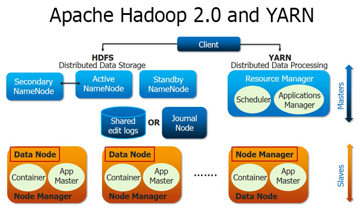
Imagen tomada de edureka!
Procesadores y Abstracciones
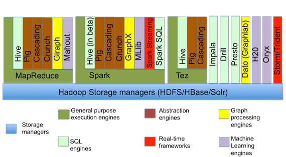
Imagen tomada de O'reilly
Procesamiento
Tipos
- MapReduce
- Spark
- Impala
Procesamiento: MapReduce
MapReduce en Hadoop
- Principal framework de ejecución de
Apache Hadoop. - Inspirado en las operaciones MAP y REDUCE de los lenguajes funcionales.
- Modelo de programación para proceso de datos distribuido y paralelo.
- Divide las tareas (jobs) en fases de mapeo y fases de reducción.
- Los desarrolladores crean tareas MapReduce para Hadoop usando datos guardados en el
HDFS.
MapReduce: Ventajas
- Fault-tolerant.
- Esconde los detalles de implementación a los programadores.
- Escala con el tamaño de los datos.
MapReduce
- Dos fases de procesamiento:
- key-value como Input y Output
- El programador especifica:
- Tipos de key-value
- Funciones:
MAPyREDUCE.
Una pequeña regresión…
map-reduce: Matemáticamente
map: (k1, v1) -> list(k2, v2)
mapMapea (aplica una función f) un conjunto de entrada de pares key-value a otro conjunto intermedio de key-values
map-reduce: Matemáticamente
reduce: (k2, list(v2)) -> list(k3, v3)
reduceAplica una función g a todos los valores (values) asociados a una llave (key) y acumula el resultado. Emite pares de key-values.
Python map
# Equivalente en for-loop
items = [1,2,3,4,5]
cuadrados = []
for x in items:
cuadrados.append(x**2)
print cuadrados
# Usando la funcion map(function, sequence) items = [1,2,3,4,5] print list(map((lambda x: x**2), items))
Python reduce
# Equivalente en for-loop
L = [1,2,3,4]
result = L[0]
for x in L[1:]:
result = result*x
print result
# Usando la funcion reduce(funcion, secuencia) print reduce((lambda x,y: x*y), [1,2,3,4])
Python map y reduce
a = range(1, 4) b = range(4, 9) c = range(9, 15) print "a -> %s, b -> %s , c -> %s" % (a, b, c) L1 = map(lambda x:len(x), [a,b,c]) print "L1 -> %s" % L1 L2 = reduce(lambda x, y: x+y, L1) print "L2 -> %s" % L2
MapReduce y map-reduce
- Básicamente es lo mismo, pero…
map,reduce(entre otras) son parte de lenguajes funcionales.MapReducees la aplicación de esta idea aplicada a problemas vergonzosamente paralelos.- Ver la carpeta
docspara el artículo de Google sobreMapReduce.
- Ver la carpeta
GNU Parallel
find ./data/books -type f | parallel -j0 egrep -i '\[\[:digit:\]\]' {} | awk '{s+=$1} END {print s}'
- ¿Puedes identificar las partes
mapyreduce? - Esto ya es un
MapReduce.
MapReduce en Hadoop
- A nivel programático:
- Data de entrada
- Programa MapReduce
- Configuración
- Subtareas:
mapyreduce
MapReduce: Mapper
- Hadoop divide la entrade de datos al job MapReduce en pedazos de tamaño fijo llamados input splits.
- Hadoop crea una tarea
mappara cada input split. mapescribe al file system local.- Si el
reducertiene éxito se borra la salida del mapper.
- Si el
Map only
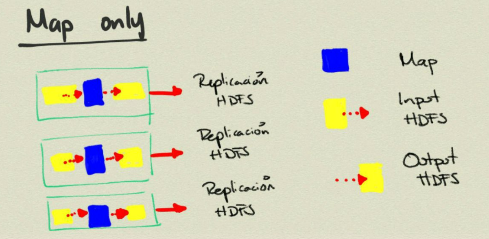
MapReduce: Reducer
- La entrada es la salida de (posiblemente) todos los mappers.
- Estas se transmiten vía red al nodo donde corre el reducer.
- La salida se guarda en el
HDFS.
Map, One reduce
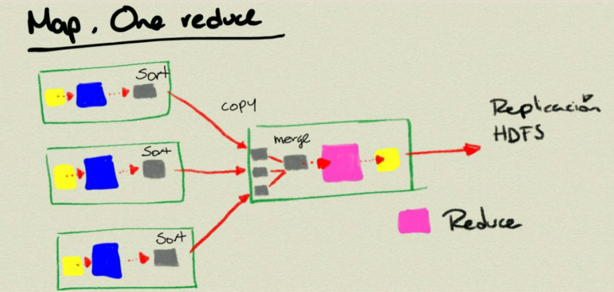
MapReduce
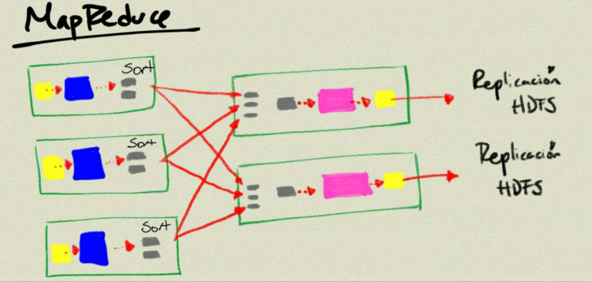
MapReduce: Combiner
- Es una medida de optimización.
- Es para ahorrar ancho de banda.
- Una especie de reducer local.
- No es parte (estrictamente) del MapReduce
- Por eso no lo había mencionado.
Word count
- Es el ejemplo Hola Mundo de Apache Hadoop.
- No sólo eso, es el ejemplo que se utiliza en el trabajo seminal
- MapReduce: Simplified Data Processing on Large Clusters (2006).
- En la carpeta
docscomo ya había dicho.
- Solamente 1
Mapy 1Reduce.
Word count
- mapper
k1-> nombre de archivov1-> texto del archivok2-> palabrav2-> "1"
- reducer
k2-> palabra- list(v2) -> (1,1,1,1,1,1,…, 1)
Suma los "1" y produce una lista de
- k3 -> palabra
- v3 -> suma
Word count
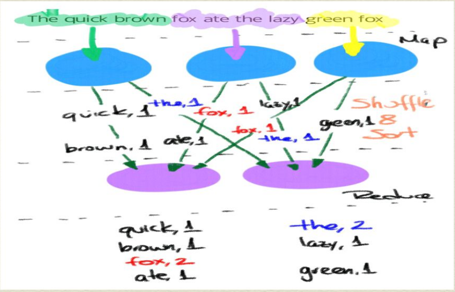
Pseudocódigo
map (String key, String value)
for each word w in value
Emit(w, 1)
reduce (String key, Iterator values)
int wordcount = 0
for each v in values
wordcount += v
Emit(key, wordcount)
Mockup
- Ver los archivos
word_count.pyymapreduce.pyen la carpetamock.
chmod +x word_count.py
python word_count.py
- Este es un ejemplo de mentiritas, no usa Apache Hadoop.
Ejercicio
- Organízate en grupos de cuatro personas
- Diseñe (en pseudo código, imágen, código, lo que sea más fácil) el MapReduce para lo siguiente:
- Encontrar el máximo de un conjunto de datos.
- Encontrar el promedio y desviación estándar de unos datos.
- Encontrar el top 10 de una cantidad.
- Contar por grupo
- Subir el diseño a
githuben la carpetagrupos, dentro de una carpeta de equipo (agregar unREADMEpara saber los participantes) - NOTA Esta carpeta será la usada para el proyecto final.
Abstracciones de MapReduce
Abstracciones: Pig
Pig
- Proyecto de Apache
- Abstracción encima de Hadoop
- Pig Latin compila a
MapReduce - En cierta forma Pig Latin es para analistas, data scientist y estadísticos.
MapReducees para programadores (aunque los data scientist deberían de poder hacerlo también)
- Pig Latin compila a
Pig
- Pig es un data flow programming language
- Es decir,
- Ejecuta paso a paso
- Cada paso es una transformación de datos
- En cambio
SQLes un conjunto de constraints que en conjunto definen el resultado buscado.
Pig
- ¿Qué cosas puede hacer?
joinssortsfiltersgroup by- User defined functions
UDF's
Pig
- ¿Qué cosas puedo hacer?
ETLs- Limpiar.
- Joins gigantes.
- Búsqueda en Raw.
Pig
- Componentes
- Pig Latin
- Los
keywordsno son case-sensitive, pero las relaciones y losUDFssi lo son.
- Los
Grunt- Local
- MapReduce
Pig compiler
- Pig Latin
Pig
- Es posible ejecutar también scripts de Pig Latin (terminación
.pig) sin entrar agrunt.
pig script_file.pig
- Si quieren pasar parámetros
pig -p var=bla/bla var2=bla/bla/bla script_file.pig
- Y usarse desde programas en
Javacon la clasePigServer.- Como una especie de
JDBC, pero para Pig Latin.
- Como una especie de
Pig latin: Building blocks
- Escalares
- Son interfaces a clases
java.langint, ,long,float,double
- Por ejemplo:
- Son interfaces a clases
'Adolfo'
- Tuplas
- Colleción ordenada de tamaño fijo de datos.
- Están divididos en fields, cada uno conteniendo un elemento.
- Como son ordenados, se pueden referir por posición.
('Adolfo', 3, 8.17, 23)
- Bags
- Colección sin ordenar de tuplas.
{('Adolfo', 3, 8.17, 23), ('Paty', 3.14, 9, 'A')}
Pig latin: Operaciones
load,store,dump
store procesados into 'output/procesados'; -- Guarda la relación en el HDFS
dump procesados; -- Imprime en pantalla la relación
foreach- Aplica un conjunto de expresiones a cada elemento del data pipeline.
- Es el operador de proyección de
Pig latin.
filter- Seleccionar que registros se mantendrán en el data pipeline.
group- Agrupa registros con la misma llave en un bag.
- La sintaxis es parecida a la de
sql, pero son muy diferentes.- No hay relación entre el agrupamiento y las funciones de agregación (recuerden sus clases de
sql).
- No hay relación entre el agrupamiento y las funciones de agregación (recuerden sus clases de
order by- Ordena los datos.
distinct- Remueve duplicados.
limit,sample- Limita la cantidad de información que se ve.
parallel- Afecta la cantidad de
reducersque hay.
- Afecta la cantidad de
¿Qué funciones hay?
Expresiones Regulares de Java
En los siguientes ejercicios llegaremos a usar expresiones regulares Pig y hive soportan las regex de Java,
aquí pueden obtener más información sobre el tema.
Ejemplo: Wordcount
- Para comprender bien lo que está pasando te recomiendo usar
illustrateodescribeen cada paso.
shakespeare = load 'books/pg100.txt' using TextLoader as (line:chararray);
-- Usando UDFs y expresiones regulares de Java
palabras = foreach shakespeare generate flatten(TOKENIZE(REPLACE(LOWER(TRIM(line)), '[\\p{Punct}, \\p{Cntrl}]', ' '))) as palabra;
grupo = group palabras by palabra;
conteo = foreach grupo generate $0 as palabra, count($1) as cantidad;
ordenados = order conteo by cantidad desc;
top10 = limit ordenados 10;
dump top10;
Ejercicio
- Describe cada línea con comentarios y agrega los esquemas.
- i.e. elimina los
$0, etc
- i.e. elimina los
- Guarda la salida de cada uno de estos en una carpeta
output/wordcount/pigen tu carpetahdfs. - Copia la salida al sistema de archivos local y súbelo a
github.
Pig: JOINS
- Cargamos fuente 1
- Cargamos fuente 2
- Unimos las fuentes (bags) mediante una llave
- Súper simple
Pig soporta inner joins (valor por omisión), left outer joins (y right también) y full outer joins.
fuentes_unidas = join fuente1 by (keys) [left|right|full outer] fuente2 by (keys);
Además Pig soporta cogroup además de los joins (el cogroup
preserva la estructura de las fuentes y crea tuplas por cada llave)
fuentes_unidas = cogroup fuente1 by (keys) fuente2 by (keys);
Pig: Ejemplo de JOINs y COGROUPs
- Fuente de datos:
mascotas (dueño, mascotas)
(Adolfo, tortuga)
(Adolfo, pez)
(Adolfo, gato)
(Paty, perro)
(Paty, gato)
- Fuente de datos:
amigos(amigo1, amigo2)
(Diana, Adolfo)
(Gabriel, Adolfo)
(Shanti, Paty)
COGROUP mascotas by dueño, amigos por amigo2;
(Adolfo, {(Adolfo, tortuga), (Adolfo, pez), (Adolfo, gato)}, {(Diana, Adolfo), (Gabriel, Adolfo)})
(Paty, {(Paty, perro), (Paty, gato)}, {(Shanti, Paty)})
JOIN mascotas by dueño, amigos por amigo2;
(Adolfo, tortuga, Diana)
(Adolfo, tortuga, Gabriel)
(Adolfo, pez, Diana)
(Adolfo, pez, Gabriel)
(Adolfo, gato, Diana)
(Adolfo, gato, Gabriel)
(Paty, perro, Shanti)
(Paty, gato, Shanti)
Aclaraciones sobre GROUP y FLATTEN
FLATTENelimina un nivel anidamiento- Ejemplo
(Adolfo, (tortuga, pez, gato))
(Paty, (perro, gato))
- FLATTEN eliminaría los bags internos
(Adolfo, tortuga)
(Adolfo, pez)
(Adolfo, gato)
(Paty, perro)
(Paty, gato)
GROUP .. BYorganiza los bags en bags- Siguiendo con los datos anteriores de mascotas:
- GROUP mascotas BY dueño;
- Siguiendo con los datos anteriores de mascotas:
( Adolfo, {(Adolfo, tortuga), (Adolfo, pez), (Adolfo, gato)} )
( Paty, {(Paty, perro), (Paty, gato)} )
- En cierto sentido
FLATTENyGROUP .. BYson operaciones inversas entre sí.
Ejercicio
- Describe cada línea con comentarios y agrega los esquemas.
- Guarda la salida de cada uno de estos en una carpeta
output/ufos/pigen tu carpetahdfs. - Copia la salida al sistema de archivos local y súbelo a
github.
ufos = load 'ufos' using org.apache.hive.hcatalog.pig.HCatLoader();
a_imprimir = limit ufos 5;
por_estado = group ufos by State;
describe por_estado;
explain por_estado;
illustrate por_estado;
-- itera sobre cada elemento del bag
conteo = foreach por_estado generate group count_star(ufos);
ordenados = order conteo by $1 desc;
top_five = limit ordenado 5;
unicos = distinct conteos;
muestreo = sample por_estado 0.1;
filtrados = filter conteos by substring(group, 0, 2) == 'W';
mayores = filter conteos by $1 > 50;
Abstracciones: Hive
Hive
- Proyecto de Apache.
- Abstracción pra modelar y procesar datos en Hadoop.
- Proveé de una manera de estructurar datos guardados en el
HDFS. - Permite crear queries muy similares a
SQL(llamadoHQL) y correrlos contra los datos. - Contiene un almacén de metadatos (
HCatalog), que además puede ser compartido con otras interfaces comoPig,MapReduce,Impala,Spark, etc. - Da Acceso al
HDFSyHBase.
Bibliografía recomendada
- Sitio web de Hive
- Hadoop: The Definitive Guide
- Programming Hive
Arquitectura de Apache Hive
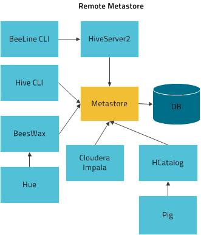
¿Qué funciones hay?
Ejemplo: Wordcount
- Describe cada línea con comentarios y agrega los esquemas.
- Averigua (usando la documentación) como guardar la tabla a archivo y compara el
top10con el resultado dePig. - ¿Por qué da diferente?
- Modifica el código para arreglar la diferencia.
- Guarda la salida de cada uno de estos en una carpeta
output/wordcount/hiveen tu carpetahdfs. - Copia la salida al sistema de archivos local y súbelo a
github.
-- Limpiamos el ambiente
delete table shakespeare;
delete table wordcount;
-- Creamos la tabla que contendrá las obras de Shakespeare
create table shakespeare(linea string);
-- Verifiamos
show tables;
-- Cargamos los datos a la tabla
load data inpath '/user/itam/books/pg100.txt' overwrite into table shakespeare;
-- Quereamos y guardamos en una tabla
-- Los símbolos raros '\\p{Punct}' y similares son expresiones regulares de Java
create table wordcount as
select palabra, count(*) as conteo from
(
select
explode(split(lcase(regexp_replace(trim(linea),'[\\p{Punct}, \\p{Cntrl}]', ' ')), ' ')) as palabra
from shakespeare
) palabras
group by palabra
order by conteo desc limit 10;
-- Este código se podría hacer más pequeño con LATERAL (¿Recuerdan la clase de PostgreSQL?)
Ejercicio
- Repite el ejercicio de
Pigsobreufos, pero ahora enHive.
Procesamiento: Spark
Spark
- Framework de cómputo general para clusters
- Ejecuta en
YARN- Aunque también puede hacer standalone, o ejecutar sobre
EC2oMesos.
- Aunque también puede hacer standalone, o ejecutar sobre
- Soporta varios lenguajes
Python,JavaoScala- Hay soporte experimental para
R:SparkR- Esta presentación tiene un excelente chiste sobre los RDDs.
- En esta clase usaremos
Python, pero es necesario mencionar que para explotar esta herramienta al máximo habría que aprenderScala.
Resilient Distributed Datasets (RDDs)
- Es una de las ideas principales de Spark.
RDDses una abstracción que representa una colleción de objetos de sólo lectura que está particionada a lo largo de varias máquinas.- Sus ventajas:
- Pueden ser reconstruidas a partir de su lineage. (Soportan fallos…)
- Pueden ser accesadas vía operaciones en paralelo, parecidas a MapReduce.
- Son cached en memoria para su uso inmediato.
- Fueron construidas para ser almacenadas de manera distribuida.
- Contienen cualquier tipo de dato (ya sea de
Python,JavaoScala) incluidos tipos definidos por el programador.
Resilient Distributed Datasets (RDDs)
- Soportan dos tipos de operaciones
- Transformaciones
- Acciones.
- Las transformaciones construyen un
RDDnuevo a partir del anterior.- Muy similar a lo que hace cada paso de
Pig. - Cada transformación queda guardada por
Sparken el lineage graph un DAG.
- Muy similar a lo que hace cada paso de
- Las acciones calculan un resultado basado en el
RDD. - La diferencia es que las
RDDson computadas en forma lazy, sólo son ejecutadas hasta la acción. - Si quieres usarlo una
RDDvarias veces debes de persistirla (conpersist()).
Flujo típico
- Crear un
RDDa partir de datos externos. - Transformarlo a nuevos
RDDs. - Persistir algunos
RDDspara su uso posterior. - Lanzar acciones.
Transformaciones
map- Usa una función y la aplica a cada elemento del
RDD, el resultado se guarda en un nuevoRDD.
- Usa una función y la aplica a cada elemento del
filter- Usa una función y devuelve sólo los elementos que pasan la función (que devuelven verdadero) en el nuevo
RDD.
- Usa una función y devuelve sólo los elementos que pasan la función (que devuelven verdadero) en el nuevo
flatMap- Como el
mappero regresa un iterador por cada elemento- Por ejemplo una función que divide una cadena.
- Como el
distinct,sampleunion,intersection,substract,cartesian
Acciones
reduce- Opera en dos elementos del mismo tipo del
RDDy regresa un elemento del mismo tipo.
- Opera en dos elementos del mismo tipo del
aggregate- Nos permite implementar acumuladores.
collect- Regresa el
RDDcompleto.
- Regresa el
take- Regresa un número
nde elementos delRDD.
- Regresa un número
count,countByValue,top,foreach.
Ejemplo: WordCount
def tokenize(texto):
texto.split()
shakespeare = sc.textFile("hdfs://localhost/user/itam/books/pg100.txt")
wordcount = shakespeare.flatMap(tokenize).\
map(lambda x: (x,1)).\
reduceByKey(add).\
map(lambda x: (x[1], x[0])).\
sortByKey(False)
wordcount.take(10)
Ejercicio
- Explica el código anterior
- Modifica el código de
SparkyPythonpara que reproduzca el resultado dePigyHive. - Súbelo a github
Ejercicio
- Repite el ejercicio de
Pigsobreufos, pero ahora enSpark.
Procesamiento: Impala
Impala
- Cloudera basó este desarrollo en dos white papers de Google describiendo baja latencia en consultas con tecnologías llamadas F1 y Dremel.
- No está basado en el motor de procesamiento
MapReduce. - Optimizado en latencia.
- Usa
SQLy utilizaHive Metastore. - Soporta el
hdfsyHBase.
Impala
- Todo está en memoria
- No escribe a disco como
MapReduce.
- No escribe a disco como
- Tiene los demonios siempre corriendo.
- No levanta procesos para cada tarea, como
MapReduce.
- No levanta procesos para cada tarea, como
- Escrito en
C++no enJava. - Nota: Con la aparición de
Hive on Spark, habrá que ver cual framework gana.
¿Qué funciones hay?
Ejercicio
- Escribe el wordcount en Impala.
- Deberás averiguar que funciones utilizar para reproducir la salida de
PigyHive.
- Deberás averiguar que funciones utilizar para reproducir la salida de
- Súbelo a github el código y el resultado, así como la comparación con las otras salidas.
Ejercicio
- Repite el ejercicio de
Pigsobreufos, pero ahora enImpala.
Arquitectura: Orquestación
Orquestación
- Regularmente existen varios pasos de procesamiento para preparar los datos.
- Extraer los datosw (desde una carpeta, el internet, una base de
datos) e importarlos al
hdfs. - Validar los datos.
- Trasnformarlos a un formato más adecuado.
- Ejecutar agregaciones y generación de variables.
- Extraer los datosw (desde una carpeta, el internet, una base de
datos) e importarlos al
- Además estos pasos se empiezan a ejecutar cuando:
- A un tiempo dado
- e.g. Cada medianoche
- Un evento ocurre
- e.g. Se agregó un nuevo archivo
- A un tiempo dado
- Coordinar los pasos
- Un paso se sigue al otro, sólo si el anterior terminó exitosamente.
- Repetir el paso
- Tomar acciones de gestión
- Mandar correos
- Tomar tiempos de ejecución
Orquestación
- Al concepto de coordinación, gestión, programación se les conoce como orquestación.
- La orquestación (como muchas cosas en este curso) se representa
por un grafo dirigido acíclico (
DAG). - A un
DAGse le conoce como workflow y a la administración de los worflows se le conoce commo orquestación de workflows. - En esta clase veremos a
Luigicomo orquestador.
Ejercicio
- Reúnanse con su equipo y diseñen los pasos que tendría que tener un
workflow para
ufosy paragdelt. - el objetivo del workflow es dual, dejarlos preparados para nueva
explotación analítica y prepararlos para mostrarlos en un
shiny. - Recuerde usar la estructura de directorios discutida.
- Indica las posibles excepciones.
- Describa los pasos en un documento y súbalo a
githuben la carpeta del equipo.
"Orquestando" la Ingesta
- ¿Cada cuándo se ingestan?
- super batch, batch, toma de decisiones near real time, proceso de eventos near real time, real time.
- ¿Incremental o full?
- Recuerda que
hdfses casi read-only…
- Recuerda que
- Consideraciones
- Del sistema de entrada
- Velocidad de los discos
- Tipo del archivo de entrada
- Base de datos relacional
- Streaming
- Transformaciones, Particionado, División
- ¿ On-the-fly ?
- Cuellos de botella
- ¿Push o Pull?
- Casos de excepción.
- Del sistema de entrada
Apache Flume
¿Por qué?
- Hasta este momento hemos movido los datos hacia dentro de
HDFSde manera manual usandohadoop fs ...- Esto no va a escalar…
- Si han puesto atención a la clase, quizá quieran automatizar esto
usando
bash, y una combinación deparallelconscpy obviamentehadoop fs ... - Si logran armar el script el siguiente paso es ejecutarlo
"solito", y para eso quizá haya que poner un
cron
¿Por qué?
- Esto tampoco va a escalar…
- hardcodeado
- Poca o nula configuración
- Mantenimiento
- Manejo de cargas
- Manejo de datos en masa
- Manejo de fallos y excepciones
- Agreguen su pesadilla favorita
Apache Flume
- Componente para la captura (ingesta) de datos basados en eventos a Hadoop.
- Apache Flume es un sistema de alto desempeño para la ingesta de datos.
- Es escalable horizontalmente y muy configurable.
- Una posible alternativa es Apache Kafka.
Apache Flume
- Distribuido
- Agentes en varias máquinas
- Escalable
- Más máquinas, más eventos
- Confiable
- Almacenamiento confiable, failover, replicación, distribución, etc.
- Fácil instalación y configuración.
¿Cómo funciona?
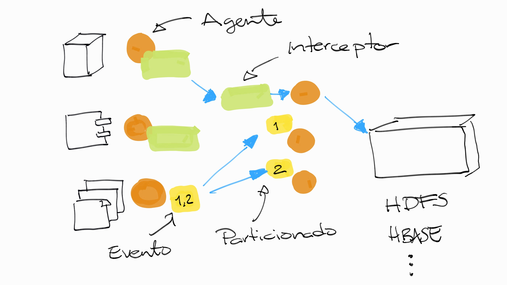
¿Cómo funciona?
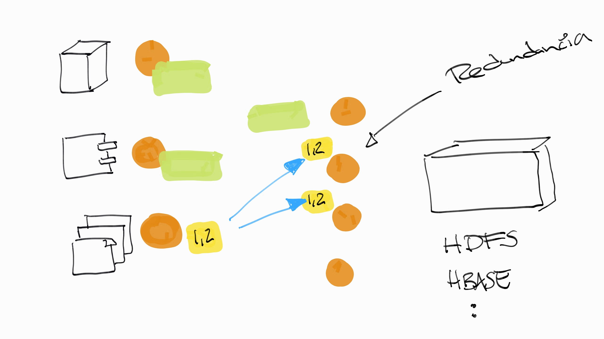
¿Cómo funciona?
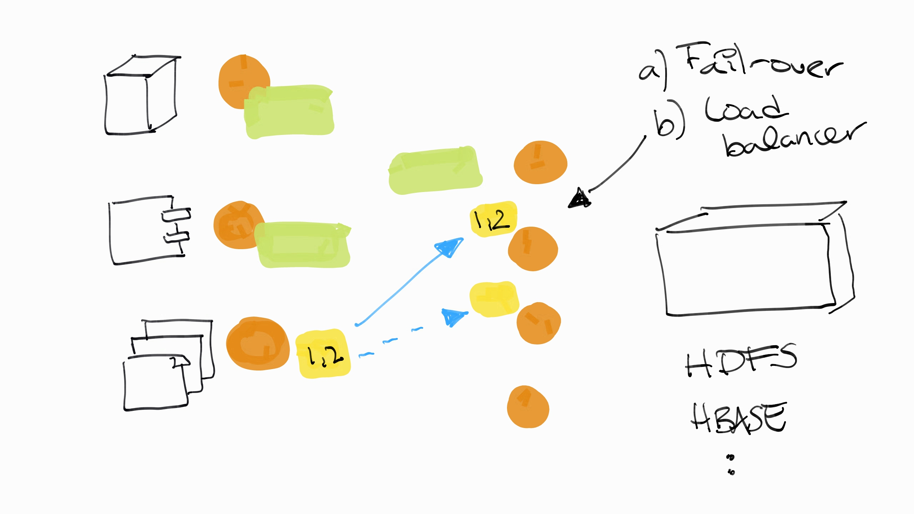
¿Cómo funciona?
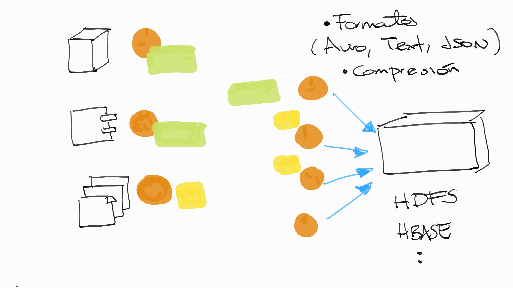
¿Qué es un evento?
- Unidad de datos transportada por
Flume. - Compuesta por
Header(un mapa:Map <java.lang.String java.lang.String>) y porpayload(byte[])
Agente de Flume
- Responsable de transmitir los eventos.
- Consiste en Fuente (
source), Canal (channel) y Sumidero (sink).
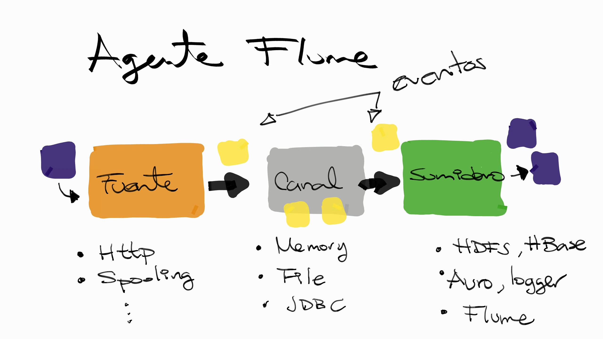
Agente de Flume
- Fuente
http,jms,netcat, etc.Exec- Observa un comando de
unixy procesa elstdoutde este.
- Observa un comando de
- Spooling directory
- Observa un directorio para la aparición de nuevos archivos.
- Procesa los eventos de los nuevos archivos.
- Después de procesarlo, lo borra o lo renombra.
AvroSource
- Canal
- Sirve de buffer de los eventos mientras se van extrayendo de la fuente.
- Tipos:
Memory(no es durable, muy rápido),File(Durable, soporta cifrado, Es el canal de mayor capacidad).JDBC
- Sumidero
- Remueve los eventos del canal y los envía a su siguiente destino.
hdfs,hbase,solr,elasticsearchAvroSink
Interceptores
- Proveen capacidad de inspeccionar y modificar al vuelo eventos.
- Está pegado a la fuente.
- Es invocado cada vez que un evento se mueve de la fuente al canal.
- Se pueden concatenar varios interceptores.
Ejemplo: Hola Mundo
- Crea la carpeta
ingestaen el file system local. - En ella crea un archivo llamado
hola_mundo.conf. Este será el archivo de configuración de nuestro primer ejemplo deFlume.
agent.sources=s1
agent.channels=c1
agent.sinks=k1
agent.sources.s1.type=netcat
agent.sources.s1.channels=c1
agent.sources.s1.bind=0.0.0.0
agent.sources.s1.port=12345
agent.channels.c1.type=memory
agent.sinks.k1.type=logger
agent.sinks.k1.channel=c1
- Ejecuta la siguiente línea de comandos para levantar un agente de
Flume:
flume-ng agent -n agent -c . -f ingesta/hola_mundo.conf -Dflume.root.logger=INFO,console
Ejemplo: Hola Mundo
- Ahora abre otra terminal y conéctate a
docker- Recuerda que es con
docker exec...
- Recuerda que es con
- Cámbiate al usuario
itam. - Ejecuta
nc localhost 12345 - Y manda mensajes, observa como
Flumereacciona.
Ejercicio I
- En este ejercicio, veremos como mover datos desde una carpeta hacia
hadoopusandoflume.- Lo haremos de manera incremental.
- Primero, Conectaremos el archivo al log en pantalla.
- Crea la carpeta
/opt/ufos - Guarda lo siguiente en
ingestion/ufo-agent1.conf.
# Componentes
UFOAgent.sources = UFODir
UFOAgent.channels = c1
UFOAgent.sinks = UFOLogger
# Canal
UFOAgent.channels.c1.type = memory
# Fuente e Interceptores
UFOAgent.sources.UFODir.type = spooldir
UFOAgent.sources.UFODir.channels = c1
UFOAgent.sources.UFODir.spoolDir = /opt/ufos
UFOAgent.sources.UFODir.fileHeader = true
UFOAgent.sources.UFODir.channels = c1
# Sumidero
UFOAgent.sinks.UFOLogger.type=logger
UFOAgent.sinks.UFOLogger.channel=c1
- Para ejecutar el agente:
flume-ng agent -n UFOAgent --conf ingestion -f ingestion/ufo_agent1.conf
- Para terminar
Ctrl+C.
Ejercicio I
- Antes de iniciar el siguiente ejercicio:
- Limpia la carpeta
/opt/ufos. - Borra la carpeta en el
hdfs/ufos_flume/
- Limpia la carpeta
- Haz esto mismo entre cada ejercicio de esta sección.
Ejercicio II
- Ahora lo mandaremos al HDFS, como no queremos perder datos (y no es tan rápido la generación de datos) usaremos un canal de archivo.
- Guarda la configuración siguiente en
ingestion/ufo-agent2.conf.
# Componentes
UFOAgent.sources = UFODir
UFOAgent.channels = archivo
UFOAgent.sinks = UFOHDFS
# Canal
UFOAgent.channels.archivo.type = file
UFOAgent.channels.archivo.checkpointDir = /opt/ufos/log/checkpoint/
UFOAgent.channels.archivo.dataDirs = /opt/ufos/log/data/
# Fuente e Interceptores
UFOAgent.sources.UFODir.type = spooldir
UFOAgent.sources.UFODir.channels = archivo
UFOAgent.sources.UFODir.spoolDir = /opt/ufos
UFOAgent.sources.UFODir.fileHeader = true
# Sumidero
UFOAgent.sinks.UFOHDFS.type=hdfs
UFOAgent.sinks.UFOHDFS.channel=archivo
UFOAgent.sinks.UFOHDFS.hdfs.path = /user/itam/ufos_flume/
UFOAgent.sinks.UFOHDFS.hdfs.fileType = DataStream
UFOAgent.sinks.UFOHDFS.hdfs.filePrefix = UFOData
UFOAgent.sinks.UFOHDFS.hdfs.writeFormat = Text
UFOAgent.sinks.UFOHDFS.hdfs.batchSize = 200000
UFOAgent.sinks.UFOHDFS.hdfs.rollSize = 0
UFOAgent.sinks.UFOHDFS.hdfs.rollCount = 2000000
- Para ejecutar el agente:
flume-ng agent -n UFOAgent --conf ingestion -f ingestion/ufo_agent2.conf
Ejercicio II
- Espera a que salga algo parecido a esto:
...
15/05/20 06:01:12 INFO file.EventQueueBackingStoreFile: Start checkpoint for /opt/ufos/log/checkpoint/checkpoint, elements to sync = 530
15/05/20 06:01:12 INFO file.EventQueueBackingStoreFile: Updating checkpoint metadata: logWriteOrderID: 1432101643755, queueSize: 0, queueHead: 528
15/05/20 06:01:12 INFO file.Log: Updated checkpoint for file: /opt/ufos/log/data/log-1 position: 141088 logWriteOrderID: 1432101643755
15/05/20 06:01:20 INFO hdfs.BucketWriter: Closing /user/itam/ufos_flume//UFOData.1432101649049.tmp
15/05/20 06:01:20 INFO hdfs.BucketWriter: Renaming /user/itam/ufos_flume/UFOData.1432101649049.tmp to /user/itam/ufos_flume/UFOData.1432101649049
15/05/20 06:01:20 INFO hdfs.HDFSEventSink: Writer callback called
NOTA: Otra manera de saber que ya terminó, es esperando a que
desaparezca el archivo con terminación .tmp en el hdfs.
Ejercicio III
- Incorporaremos Avro y el esquema generado por
kite. - Antes es necesario hacer lo siguiente
- Esto es necesario debido a como está instalado el modo pseudodistribuido de Cloudera.
sudo ln -s ../../kite/kite-morphlines-* /usr/lib/flume-ng/lib
sudo ln -s ../../kite/lib/metrics* /usr/lib/flume-ng/lib
sudo ln -s ../../kite/lib/config-1.0.2.jar /usr/lib/flume-ng/lib
sudo ln -s ../../kite/lib/Saxon-HE-9.5.1-5.jar /usr/lib/flume-ng/lib
sudo ln -s ../../kite/lib/tika-* /usr/lib/flume-ng/lib
Ejercicio III
- Guarda lo que sigue en
ingestion/ufo_agent3.conf
# Componentes
UFOAgent.sources = UFODir
UFOAgent.channels = archivo
UFOAgent.sinks = UFOKiteDS
# Canal
UFOAgent.channels.archivo.type = file
UFOAgent.channels.archivo.checkpointDir = /opt/ufos/log/checkpoint/
UFOAgent.channels.archivo.dataDirs = /opt/ufos/log/data/
# Fuente
UFOAgent.sources.UFODir.type = spooldir
UFOAgent.sources.UFODir.channels = archivo
UFOAgent.sources.UFODir.spoolDir = /opt/ufos
UFOAgent.sources.UFODir.fileHeader = true
UFOAgent.sources.UFODir.deletePolicy = immediate
# Interceptor
UFOAgent.sources.UFODir.interceptors = attach-schema morphline
UFOAgent.sources.UFODir.interceptors.attach-schema.type = static
UFOAgent.sources.UFODir.interceptors.attach-schema.key = flume.avro.schema.url
UFOAgent.sources.UFODir.interceptors.attach-schema.value = file:/home/itam/schemas/ufos.avsc
UFOAgent.sources.UFODir.interceptors.morphline.type = org.apache.flume.sink.solr.morphline.MorphlineInterceptor$Builder
UFOAgent.sources.UFODir.interceptors.morphline.morphlineFile = /home/itam/ingestion/morphline.conf
UFOAgent.sources.UFODir.interceptors.morphline.morphlineId = convertUFOFileToAvro
# Sumidero
UFOAgent.sinks.UFOKiteDS.type = org.apache.flume.sink.kite.DatasetSink
UFOAgent.sinks.UFOKiteDS.channel = archivo
UFOAgent.sinks.UFOKiteDS.kite.repo.uri = dataset:hive
UFOAgent.sinks.UFOKiteDS.kite.dataset.name = ufos
UFOAgent.sinks.UFOKiteDS.kite.batchSize = 10
Ejercicio III
Esta configuración consume más memoria de la que está asignada por
default, observa el parámetro -Xmx100m
- Quítalo, para que veas el error que sale (te puede salir en tu proyecto final)
flume-ng agent -n UFOAgent -Xmx100m --conf ingestion -f ingestion/spooldir_example.conf
Nota: Esto está marcando un error que no aparecía en la versión
anterior de flume, ya la reporté aquí.
Bibliografía
- Documentación de Flume
- Using Flume
Apache Sqoop
Apache Sqoop
- Herramienta para importar eficientemente data desde
RDBMSa Hadoop (HDFS, Hive, Hbase) y viceversa. - Soporta cualquier
RDBMSque tenga conexiónJDBC(PostgreSQL, MySQL, Oracle, Teradata, etc.). - Tiene soporte nativo para
MySQLyPostgreSQL. Sqoopgenera varios trabajosMapReduce, en los cuales, en cadaMapperse conecta a la base de datos usandoJDBC, selecciona un pedazo de la tabla a copiar y escribe alhdfs.
Apache Sqoop
- Puede importar una tabla o un esquema de la base de datos.
- Puede ejecutar queries (y así filtrar la tabla, o hacer
joins). - Soporta carga incremental.
- Es importante notar que
sqoopno maneja los datos en el formato esperado, por lo que será necesario tener procesamiento posterior para transformar los datos.
Apache Sqoop
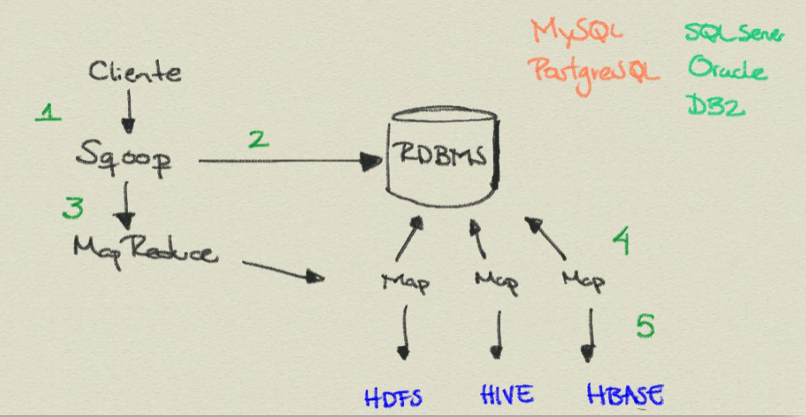
Importar datos desde el RDBM a HDFS
- Una tabla
sqoop import --connect jdbc:postgresql://host/database \
--username usuario --password contraseña \
--input-fields-terminated-by "\t"
--table --target-dir
NOTA: El parámetro de --input-fiedls-terminated-by indica como
separar los campos en el hdfs.
NOTA: Si no quieres escribir la contraseña puedes usar la bandera -P.
Importar datos desde el RDBM a HDFS
- Query: Join
sqoop import --connect jdbc:postgresql://host/database \
--username usuario --password contraseña \
--query 'select tabla_1.*, tabla_2.* from tabla_1 join tabla_2 on (tabla_1.id = tabla_2.id) where $CONDITIONS' \
--split-by tabla_1.id --target-dir
NOTA: El parámetro de --split-by indica que columna se usará para
dividir los datos en varias tareas paralelas. (Por default, sqoop
usa cuatro mappers y usará la columna de id para dividir el trabajo).
NOTA: $CONDITIONS será reemplazado por sqoop para particionar
los queries.
Importar datos desde el RDBM a Hive
- Tabla de
RDBMSa Tabla deHive
sqoop import --connect jdbc:postgresql://host/database \
--username usuario --password contraseña \
--table --hive-import \
--hive-overwrite --split-by
NOTA: Si no usas --hive-overwrite se agregarán los datos a la
tabla de hive.
Ahora puedes checarlo con beeline.
show tables;
NOTA: También soporta importar hacia Hbase, ver la documentación.
Exportar
- Muchas veces deseamos mover datos a un
RDBMSluego de procesarlos o analizarlos, quizá para conectarlos con un sistema de BI, o una aplicación web. - Se debe de crear la tabla primero donde depositaremos los datos
(se puede hacer con sqoop o con psql)
sqoop eval --connect jdbc:postgresql://host/database \
--username usuario --password contraseña \
--query "CREATE TABLE ..."
- Luego exportar
sqoop eval --connect jdbc:postgresql://host/database \
--username usuario --password contraseña \
--export-dir directorio_hdfs --table tabla \
--columns lista_de_columnas \
--input-fields-terminated-by "\t" \
Jobs
- Algunas importaciones/exportaciones deberán de repetirse, en lugar
de escribirlas una y otra vez, es posible guardarlas como
jobs - Listar los
jobs
sqoop job --list
- Crear un
job
sqoop job --create nombre_job -- ...
- Ejecutarlo
sqoop job --exec nombre_job
Carga incremental
- Si la tabla es más o menos pequeña y tarda muy poco en cargarse a
Hadoop, no vale la pena molestarse, con reescribir todo es más que suficiente. - Si es necesario hacerlo incremental, hay dos opciones por
IDy porTimestamp.- Cuando cada renglón tiene su propio
idy nuevos renglones tienenidsmás grandes que el último guardado enhadoop, se debe de crear unjob
- Cuando cada renglón tiene su propio
sqoop job --create --import \
--connect jdbc:postgresql://host/database \
--username usuario --password contraseña \
--table tabla --check-column columna-regularmente-id \
--incremental append
y luego ejecutarlo cuando se necesite:
sqoop job --exec
Ejercicio
- Es posible linkear dos contenedores de
docker. En este ejercicio, veremos como. - Inicializa el
containerdehadoop-pseudo
docker start -ai hadoop-pseudo
- Instala (como el usuario
itam) el cliente depostgresql,psql
sudo apt-get install postgresql-client
- Descarga, si no lo has hecho, la imagen de
docker-postgresql
docker pull nanounanue/docker-postgresql
- Crea un contenedor de
postgresqly linkealo ahadoop-pseudo
docker run --link hadoop-pseudo:hadoop-pseudo --name pg_server nanounanue/docker-postgresql
- Averigua la dirección IP de cada contenedor
# Visto en https://github.com/docker/docker/issues/8786
docker ps -q | xargs docker inspect --format '{{ .Id }} - {{ .Name }} - {{ .NetworkSettings.IPAddress }}'
- Desde el contenedor de
hadoop-pseudoconéctate conpsql
psql -h direccion_ip_de_pg-server -U itam
NOTA: La base de datos es itam y la contraseña es itam.
Ejercicio
- Ahora realiza lo siguiente:
- ¿Cuál serían los comandos para la copia la tabla de transacciones
de tarjeta bancaria (que hiciste en la sección de
postgresql) hacia Hadoop, colócalo en una tabla deHivey en una carpeta dentro de tu usuario. - ¿Y para extraer las tablas de tus análisis recientes con
Impala? ¿Cómo los copias a una base de datos?
- ¿Cuál serían los comandos para la copia la tabla de transacciones
de tarjeta bancaria (que hiciste en la sección de
Bibliografía
- Documentación de Apache Sqoop
- Apache Sqoop Cookbook
Hive Metastore: HCatalog
¿Por qué?
- Como vimos hay varias herramientas para analizar los datos:
MapReduce,Hive,Pig,Impalay los varios sabores deSpark. - Luego de procesar los datos, se generan o archivos en el file
system local, o archivos en el
hdfso tablas enhive. - Todo suena muy bien, hasta que nos enfrentamos a que para seguir
procesándolas necesitamos:
- Recordar y/o comunicar dónde está el
dataset. - En qué formato está.
- El esquema.
- Entre otras cosas.
- Recordar y/o comunicar dónde está el
¿Por qué?
- Estos problemas no los tiene
hive, ya que el lee el lugar, formato y esquema delhive metastore. - Pero
MapReduce,PigySparkdeciden eso en los Scripts- Por ejemplo,
Piglo hace en la funciónLOAD.
- Por ejemplo,
- Si hay cambios,
Pig,MapReduceySparksufrirán… HCatalogtrata de resolver estos problemas, ya que conoce la locación, formato y esquema de nuestrosdatasets.
HCatalog
- Está incorporado a
Hivedesde la versión0.11. - Es una capa administrativa de tablas y almacenamiento que permite
que diferentes herramientas de procesamiento de datos (
Pig,MapReduce,Spark) puedan leer y escribir más fácilmente delHDFS. - Contiene una abstracción que presenta una vista relacional de los
datos contenidos en el
HDFS, asegurando que los usuarios no se preocupen dónde o en que formato están almacenados los datos.
HCatalog
- Provee una abstracción sobre los
datasetsguardados en elhdfs. - Permite realizar data discovery.
- Provee notificaciones sobre disponibilidad de los datos.
- Creación de base de datos, tabla o partición.
- Destrucción de base de datos, tabla o partición.
HCatalogpermite que proyectos diferentes ahiveconsulten tablas deHive.
HCatalog
- Utiliza el
DDLdeHive. - Provee interfaces de escritura y lectura para
Pig,MapReduceyHive. - Usa la línea de comandos para manejar la definición de los datos y
metadatos.
- Llamada imaginativamente
hcat. - Por ejemplo, para ver el esquema de una tabla:
hcat -e "desc tabla"
- Llamada imaginativamente
HCatalogpresenta los datos de manera relacional.- Los datos son guardados en tablas y las tablas en bases de datos.
WebHCates la interfaz APIRESTdeHCatalog.
HCatalog: Flujo de datos
- Usuario 1 copia datos al HDFS
hadoop distcp file:///data/books/pg2047.txt hdfs://data/20140430/books
hcat "alter table books add partition (ds='20140430') location 'hdfs://data/20140430/books'"
- Usuario 2 usa
Pigpara limpiar y preparar los datos.HCatalogmandará alJMSun mensaje de que la información está disponible.- NOTA: Revisa la sección de
pigpara poder ver losclasspathcompletos.
A = load 'books' using HCatLoader();
B = filter A by date = '20150430';
...
store Z into 'procesados' using HCatStorer("date=20140430");
- Usuario 3 realiza cierta analítica
select col1, count(col3)
from procesados
where date = '20150430'
group by col1;
Luigi
Luigi
- Orquestador de Spotify
- Escrito en
python.- Cualquier cosa funcionará entonces:
scikit,pyspark, etc.
- Cualquier cosa funcionará entonces:
- Integrado con
Hdfs. - Soporta out-of-the-box
postgresql- Interesante: ¿Dónde queda
sqoop?
- Interesante: ¿Dónde queda
- Tiene algunas decisiones raras de diseño …
- Ver los contribs sobre todo los de
hive,sqla, etc.
- Ver los contribs sobre todo los de
Ejemplo
- Lo mejor es ver un ejemplo sencillo
- Este es el
workflow
import luigi
class SimpleTask(luigi.Task):
def output(self):
return MockFile("SimpleTask", mirror_on_stderr=True)
def run(self):
_out = self.output().open('w')
_out.write(u"Hello World!")
_out.close()
class DecoratedTask(luigi.Task):
def output(self):
return MockFile("DecoratedTask", mirror_on_stderr=True)
def requires(self):
return SimpleTask()
def run(self):
_in = self.input().open("r")
_out = self.output().open("w")
for line in _in:
outval = u"Decorated " + line + u"\n"
_out.write(outval)
_out.close()
_in.close()
if __name__ == '__main__':
from luigi.mock import MockFile
luigi.run(main_task_cls=DecoratedTask)
Ejemplo
- Levanta el
scheduler- (Ajusta acordemente)
luigid --port 8000 --background --logdir=/home/itam/workflows/log
- Abre tu navegador
- Ejecuta el =workflow
python linked_luigi.py --scheduler-port 8000
Luigi
- Y ahora ver las siguientes presentaciones:
- Luigi - Batch Data Processing in Python
- El pdf
- Los docs
Modo distribuido
Modo distribuido
- Sigue las instrucciones de aquí para levantar un cluster.
NOTA: Requerirás una cuenta en AWS.
Proyecto Final
Proyecto Final
- Implementar el flujo propuesto por el equipo.
- Utilizar al menos:
SqoopFlumeLuigiHiveoImpalapara hacer un ejemplo de analítica- Probablemente fuera del ETL.
PigoPySparkpara hacer al menos un paso del ETL- El sistema de carpetas.
- Para la base de datos de
gdelt. - Reporte de trabajo escrito, más presentación ejecutiva.
- NOTA: Recuerda que son para dos fines diferentes.
- Describa todo lo que querían hacer, junto con el caso de negocio.
- Y luego lo implementado.
- Fecha de entrega: Viernes 5 de junio, a las 23:59.
Disclaimer
- Algunas imágenes se tomaron de los libros Professional Hadoop Solutions de Wrox y de la página de Hortonworks. Las otras son mías.
- Debería de ser claro cuales son cuales.
(^_^) - Para otras imágenes, en la lámina se indica de dónde fueron tomadas.